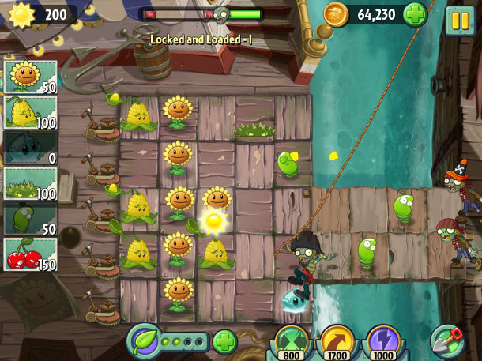

In the pantheon of epic showdowns, plants versus zombies would have to be somewhere between rocks versus rainbows and Labradors versus raptors (also known as Tokyo Jungle). That’s the point, of course; it’s a deliberately daft concept, driven
entirely by the charm of its presentation and the robustness of its gameplay. For the long-awaited sequel, PopCap hasn’t reinvented the gameplay wheel, instead opting to expand upon the original’s tried-and-true mechanics, while moving to a free-to-play
pricing structure. Gamers wary of sequelitis and aggressive in-game monetisation need not fear, however - the gameplay changes are thoughtful and a great deal of fun, while PvZ2 offers up an enormous amount of content for free. You can get to
every single level without spending a cent, with only a handful of optional plants and perks locked behind a paywall. If you’ve played Plants vs. Zombies before then you know the basics of the sequel: grow plants to defend against the waves of
zombies jonesing for your sweet, sweet brain. Many of the classic plants return, as does Crazy Dave – alongside some kind of sentient food truck – but instead of fighting around the house you’re taken on a trip through time and space. It’s a safe
change. The new themes – Ancient Egypt, the Wild West and the Pirate Seas – are nothing if not archetypal. Thankfully, they’re executed with the bubbly personality the series is famous for, and each setting introduces its own twists on the core
mechanics. In Pirate Seas levels, for instance, zombie pirates attempt to board your ship. The number of full lanes is often cut right back, with murky depths lurking to either side of the gangplanks. You may have less room to plant, but you can
also use the Spring Bean to bounce zombies into the nearby water, which can be a hugely rewarding one-hit-kill tactic.

The Wild West, meanwhile, introduces railroad tracks. These also reduce the amount of space you have to work with, but being able to plant atop the mobile mine carts that can shift lanes on the fly opens up a host of new possibilities, and
PopCap's design very much takes advantage of them. The zombie bestiary changes with each world too, and – as you’d expect – many of the designs are adorably goofy. In the Wild West alone you’ll face grizzled prospectors propelled deep into your
garden by dynamite, battle pianists that summon dancing cowboys, and fight a dude with a flock of chickens strapped to his body. Why? Who knows! But they leave a lasting impression. Plants vs. Zombies 2's new plants are great fun to experiment
with, too. Take Bonk Choy; this fist-fighter has a limited range but packs a wallop, and can still be devastatingly effective from behind a defensive Wall-nut. Lightning Reed is fun too – this plant fires electricity down its lane and adjacent
lanes, and the lightning strikes chain between zombies. It’s a low-damage attack against one enemy, but can be quite effective against crowds.
The new arsenal is greatly enhanced by the introduction of Plant Food; useful plant steroid collected during levels which can be banked until you want to use it. Then, when the moment is right and the zombies are closing in, you drag it onto
any plant to trigger a unique super attack. A standard Peashooter, for instance, unleashes a concentrated burst of peas down one lane, while the Melon-pult lobs a volley of watermelons all over the screen, and the Bloomerang sends boomerangs flying
horizontally and vertically. It’s a solid inclusion that adds another layer of tactics – you’ll need to consider each unit’s Plant Food ability at the selection screen, as these supers can be the difference between victory and defeat when used
effectively. As in the original, there’s no right way or wrong way to play, allowing a rewarding sense of freedom in your zombie-killing strategy. Maybe you like to plant offensive units as early as you can, building your arsenal slowly but steadily,
or perhaps you prefer to get your sun economy humming as quickly as possible, using stalling tactics during the first few waves for a bigger pay-off later. Maybe your strategy is built around multi-lane attackers, or maybe you’re into high-impact,
single-lane strike forces. Of course, you’ll have to adjust your tactics depending on the zombies in each level and the rules in play, meaning that while you’ll have favourites, you’ll wind up using a fair slice of the available arsenal over the
course of the campaign. You should use them all too, if for no other reason than to see the animations. Zombies and plants alike are crisply drawn and brimming with personality, and you can really see the love that’s been poured into every frame.
I appreciate the way PvZ2 mixes up the gameplay as well. There’s a heap of ways levels are shaped to create a new challenge – some have a standalone design, such as making you match symbols to kill zombies or plan your defensive formation
in full before the enemies start rolling in. Others simply tweak the rules a little, limiting you to a specific set of plants, a certain amount of sun, having no more than a certain number of plants active at one time, getting through a level
without losing more than X number of plants, or defeating a certain number of zombies within a set period of time. Most levels will throw a few stipulations at you simultaneously, creating some nicely challenging combinations. While there’s a
fair bit of variety on offer here, it certainly doesn’t match where the original game is at right now, with all its mini-games and additional modes. Also note the absence of night levels, as well as fog. That’s fine though – Plants vs. Zombies
2 is doing its own time-travel thing, and PopCap has said that new worlds and content will be released on an ongoing basis.
Besides, it’s not like you’re short on content out of the gate. There’s a huge amount of gameplay here – I’m talking 50-odd challenges in each world and dozens of hours of play. You don’t need the perks and plants behind the paywall, but
if you want to spend a couple of bucks to get the Snow Pea, you can. Hell, if you want to pay to open up every world and every level right from the start you can do that too. It’s up to you, but I personally got an enormous amount of enjoyment
out of Plants vs. Zombies 2 for next to nothing. There's one unnecessary and unfortunate byproduct of the switch to free-to-play, however, in the Power Up attacks. These cost in-game coins to use (which can be earned at a slow but fair rate or
bought for real money) and offer up three new means for dispatching enemies: frying them to a crisp, popping their heads off, and flinging them off the screen. Each is wildly overpowered and essentially lets you buy your way to victory. I don’t
want a “get out of jail free” option – I want to win because I’m a badass gardener. Thankfully, I found I could completely ignore the Power Ups, and cutting them out of the picture left an excellent challenge that ramps up smoothly.
Verdict
Like the beloved original, Plants vs Zombies 2's gameplay never stands still – it’s always evolving, layering in fresh plants and new twists. No matter how you play, the gameplay is founded on the tension between your game plan and the fact
that you’ll almost never have enough sun or space to fully execute said game plan. But that’s the point: when things invariably go wrong, the fun is in scrambling to adapt and emerging battered but victorious. Plants vs. Zombies 2 sometimes forgets
that with its overblown Power Up system. Even so, it’s an excellent – if overly safe – sequel, and as beautifully presented as it is absorbing to play.